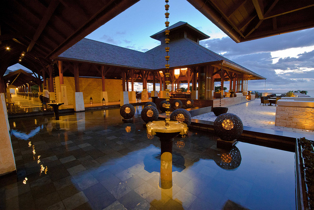
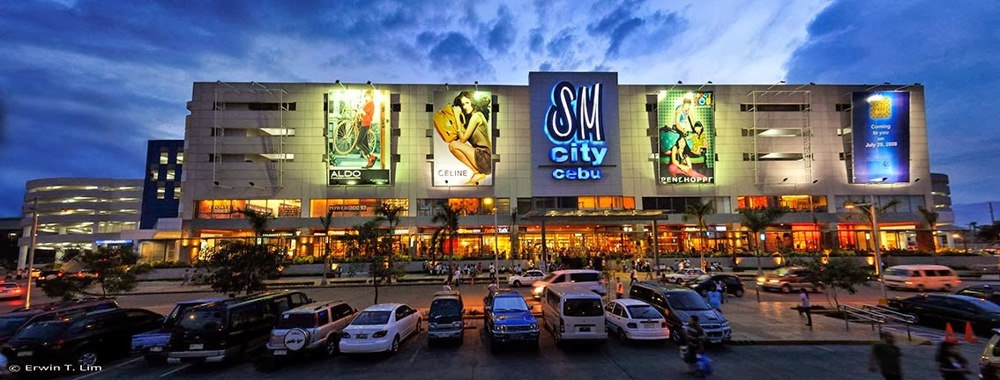

The Philippines, being an archipelago, offers countless of destinations to see, adventures to experience and activities to do. The country is blessed with a rich environment - lush forests, tropical islands, white sand beaches, lakes, rivers, mountains - and friendly, artistic and hardworking people who are always happy to welcome visitors and friends. When you come for a visit, be sure to stay for a long time so that you can enjoy the different exciting experiences that the country has in store for you. Here is a list of seven things to do in the Philippines to help you plan and maximize your stay.
Do all seven for a unique and complete travel experience - a guaranteed unforgettable vacation.
1. See some sites
There are a lot to see in the Philippines. The country is blessed with a beautiful environment and skilful people whose talented hands created some of the most magnificent man-made structures in the world.The UNESCO World Heritage Site, Banaue Rice Terraces; The well-preserved Spanish-style architecture in the historic town of Vigan, Ilocos Sur; The Baroque-style Philippine World Heritage site churches: the San Agustin Church in Paoay, Ilocos Norte, the Nuestra Senora de la Asuncion Church in Santa Maria, Ilocos Sur, San Agustin Church in Intramuros, Manila, and the Santo Tomas de Villanueva Church in Miag-ao, Iloilo.
The smallest active volcano in the world Taal Volcano in Batangas; the volcano with the most perfect cone, Mt. Mayon in Legazpi, Albay; the unique land formation that is the Chocolate Hills in Bohol. Marvel at the endemic Philippine fauna: Tamaraw, Tarsier, Phillipine Eagle.
Check out this blog article which lists down the top 30 sites do you should visit in the Philippines.

2. Explore and start an adventure
Over the past two decades, the Philippines has gained considerable international tourism attention for its beaches and scuba diving spots. However, the majority of the country's most awe-inspiring treasures are still way off the beaten tourist track. While it is definitely worth visiting its most famous beaches and experiencing the glory of its established dive sites, it is away from four-star hotels and beach-side bars where one finds the Philippines' true wonders. In these little-known places, coastlines of sheer rock display countless cascades that tumble into the ocean. Extensive cave systems contain bizarre landscapes that are as close as one can get to setting foot on an alien planet. Mountains covered by old-growth rainforests teem with life and harbor indigenous communities that have retained their traditions since pre-Hispanic times. And, not surprisingly, some of the most spectacularly pristine beaches and marine ecosystems on Earth remain unknown to all but a few. What's amazing is that many of these gems are not too far away from the main tourist digs and urban areas. Most are remote not in terms of actual distance but in terms of awareness.Try out:
Uncharted PhilippinesTheir trips are designed to showcase the best of an area and not just a single place, each of their journeys is a series of destinations. On an Uncharted Philippines adventure, the distinction between getting there and being there is often blurred and everything is simply remembered as one unbelievable experience.
Be Warned: most of their destinations cannot be accessed without sweat. All of their trips involve hiking, and on some, you will need to carry overnight or even multi-day supplies on your back.
For more information, please visit Uncharted Philippines.
3. Go on a beach holiday
The Philippines is a tropical country with one of the longest coastlines in Asia at 36,289 kilometres. It has numerous beaches most with fine powdery white sand and clean, clear and cool blue waters.Be sure to bask in the warm tropical sun and get the perfect tan that will be the envy of your friends back home.
Top Philippine beach locations:
Boracay Island, Aklan; El Nido, Palawan; Camiguin Island; Pagudpud, Ilocos Norte; Puerto Galera, Mindoro; Nasugbu and Lian in Batangas; Ternate in Cavite.
Budget Travel:
Check out this blog article by Sabrina Lovino founder of JustOneWayTicket.com, giving you tips and advices on how to have an awesome time in one of the best beach island in the philippines, Boracay, with a daily budget of only 1000 PHP(16 EU).From cheap accommodation to cheap alcohol and free activities, a trip to Boracay is something that shouldn't be missed.

4. Engage in your favourite outdoor sports and activities
The Philippines offers a wide variety of sports adventures. Different locations cater to a specific activities:play a few rounds of golf in the different golf courses around the country designed by some of the most famous golf celebrities in the world; Snorkel and interact with the "gentle giants" - the whale sharks - in Donsol, Sorsogon; Surf in Siargao Island, Surigao del Norte, Baler, Aurora, Daet, Camarines Sur and in Catanduanes province; climb the country's highest peak at 9,689 feet, Mt. Apo, in Davao City, Davao, trek Mt. Pinatubo or explore the Callao caves in Tuguegarao, Cagayan province; go white river rafting in Chico River or in Cagayan de Oro River; go kayaking and canoeing at the Bacuit Archipelago and at the St. Paul Subterranean Cave both in Palawan; windsurf in Lake Caliraya or in Taal Lake, kitesurf in Boracay, wakeboard in Pili, Camarines Sur.
If you are a diving enthusiast - amateur or professional, or someone who is looking for an underwater experience of a lifetime, then you must go to the Philippines if only for the reason that the country has the highest density of coral species in the world.
Visit this site to see some of the top outdoor activitie in the Philippines.
4. Relax
There is nothing more relaxing than enjoying the traditional Filipino "healing" massage or touch therapy called Hilot. The soothing touch of this massage relaxes and heals tired muscles and aching joints. Try this and other spa treatments at the Nurture Spa in Tagaytay, Mandala Spa in Boracay, Sanctuario Spa in Manila, Chi Spa Village in Shangri-La Mactan, Cebu, and at The Farm at San Benito in Batangas.
5. Feast
Be ready to put on a few extra pounds as you satisfy your cravings by indulging in a Filipino feast.Dishes to try: Lechon, spit-roast whole pig served with liver sauce; Adobo, pork, chicken or a combination of both, marinated in vinegar, soy sauce and garlic and stewed until tender; Kare-kare, meat and vegetables cooked with peanut sauce served with shrimp paste; Sinigang, pork, or seafood in tamarind soup; or the freshest seafoods - fish, squid, shrimp, lobsters - grilled to perfection. The more adventurous people should try Balut or boiled duck eggs containing a partially formed embryo, and Dinuguan, the pork blood stew eaten with steamed rice or Puto, rice cakes.
All around the country, there are restaurants offering different cuisines from American to Chinese, from Indian to Greek, from Japanese to French.
6. Shop
Shopping in the Philippines is an experience both in bargain and variety. Most shopping places or Malls in Manila, Makati, Cebu and Davao virtually have everything that you will need - from designer western brands to items specifically designed for the tourist market. Around the country, specifically in city centers, Tiangges or the Filipino version of flea markets abound offering quality items at bargain prices. In Manila shop at the third largest mall in the world Mall of Asia, Robinson Place, Balikbayan Handicrafts, Tutuban Center Mall and at the San Andres Market (for fresh fruits and other produce). In Makati and its surrounding areas, shop at Greenbelt, Glorietta, Landmark Department Store, Greenhills Shopping Center, Megamall, Shangri-La Mall and at Tiendecitas. In Cebu, check out the Ayala Center, the Gaisano Malls, Robinson's Place, SM City, and for native delicacies, fresh produce and fresh and dried seafood, go to the Carbon and Tabo-an Markets. In Davao, shop at Aldevinco Shopping Center (for fabrics, batik, carvings) Victoria Plaza, Gaisano Mall and at the New City Commercial Center department store.
An experience not to be missed in flea market-shopping in the Philippines is the "bargaining" where shoppers can buy items with big discount, depending on charm and good bargaining skills.

7. Nightlife
There is an abundance of places to go to and enjoy a night out in the Philippines. Every major city of the country has a number of nightlife activity hubs with restaurants, cafes, bars, clubs and karaoke bars all promising a good time of fun and entertainment. In the country's financial district Makati, there is the Greenbelt, Glorietta, The Fort, Jupiter St. and J. P. Rizal Street. In the city's capital, Manila, nightlife is diverse. There is something for everybody in Malate, and in the newly revitalized Roxas Boulevard and its Baywalk.
Be sure to go to Ayala Mall and in the different establishments that abound Osmena Blvd. The ultimate island-nightlife location in the Philippines is Boracay Island in the province of Aklan. The island is known for its carefree attitude, and the island is home to a lot of clubs and bars on the beach: Bazzura, Hey Jude, D' Mall, and the Station 2 establishments.